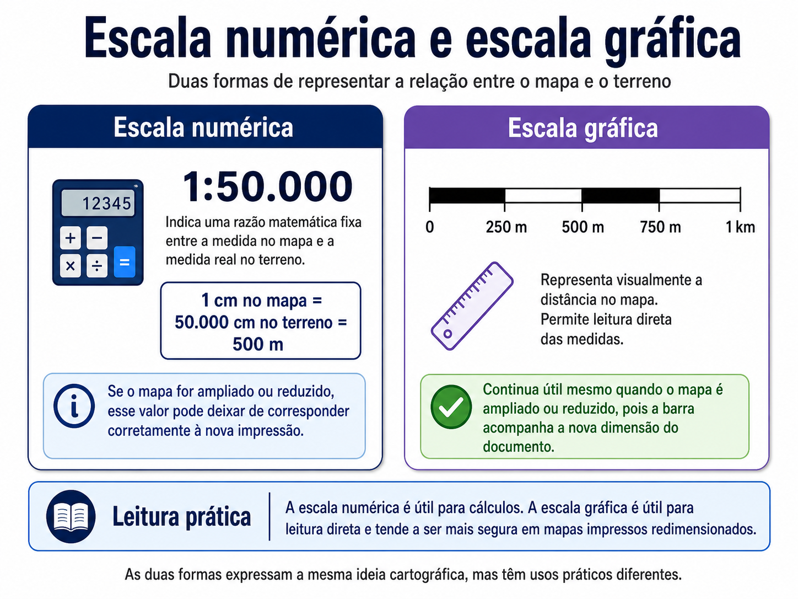
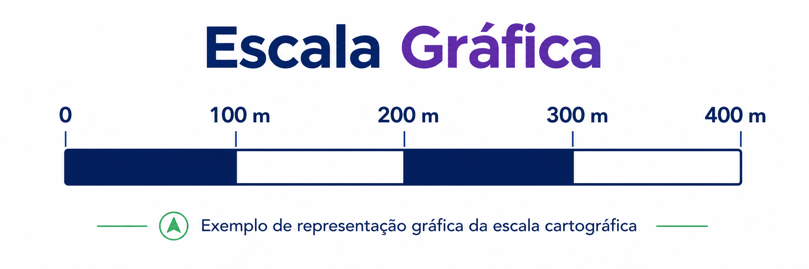
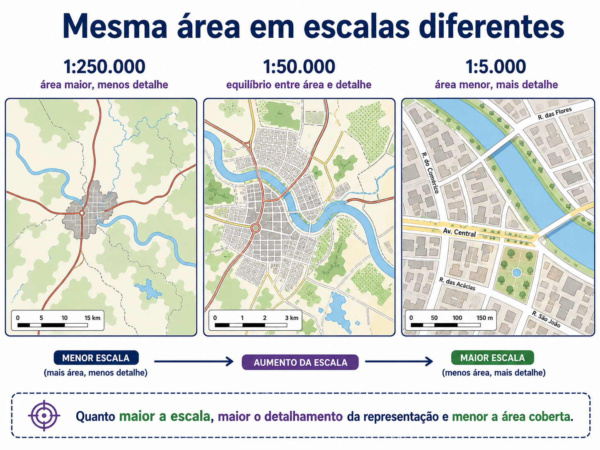
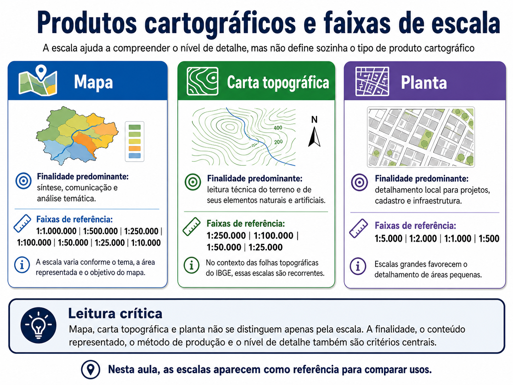
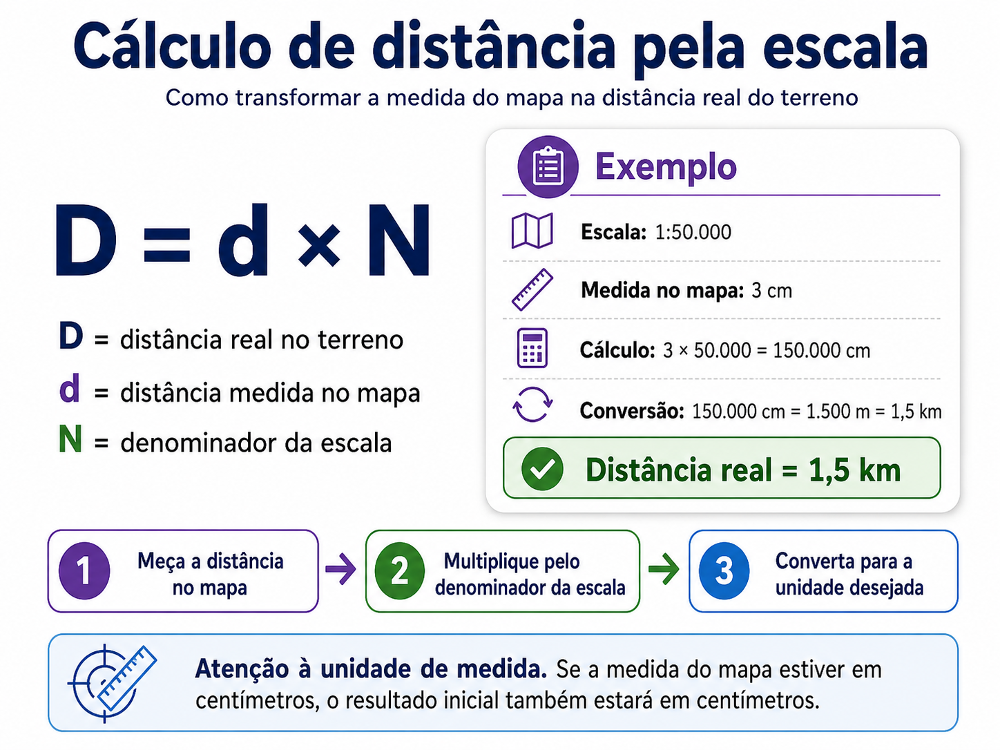
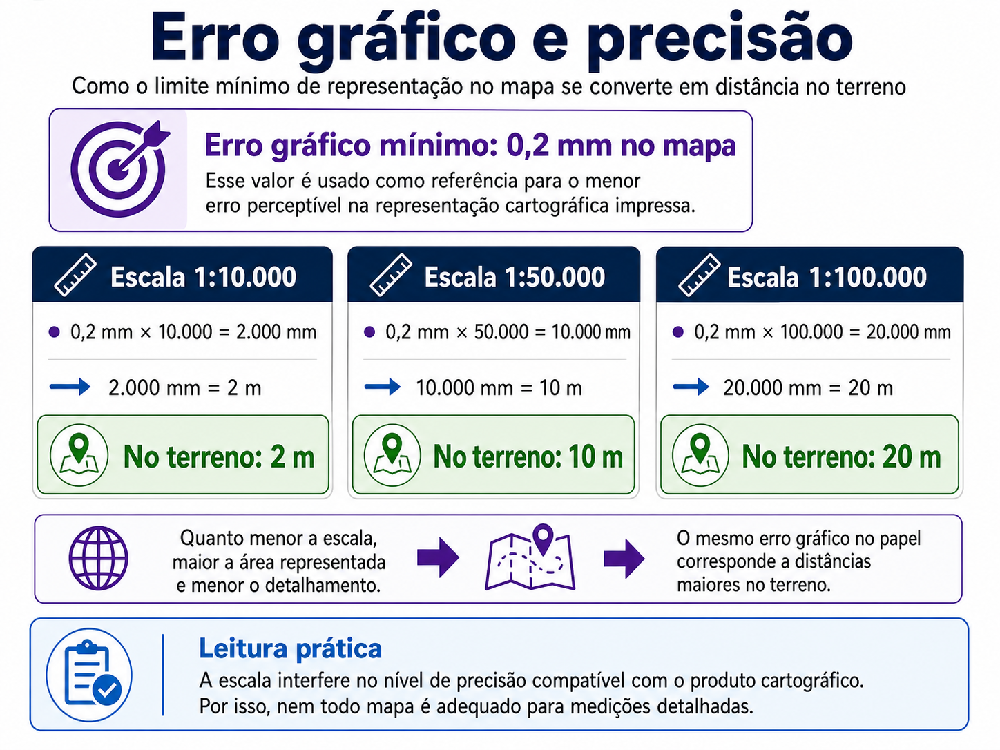

Uma aula para compreender como a escala relaciona a representação cartográfica ao terreno, orientando o nível de detalhe, a generalização, o cálculo de distâncias e a adequação do produto ao uso técnico.
Aula 02escala numéricaescala gráficacálculo de distânciaserro gráfico
Vídeo da aula
Comece pelo vídeo
A Aula 02 aprofunda um dos elementos centrais da leitura cartográfica: a escala. Antes de calcular distâncias ou interpretar detalhes, é preciso compreender o que a escala permite observar, medir e analisar em um mapa, carta ou planta.
Escala cartográfica como critério de leitura técnica
Na Aula 01, vimos que mapas, cartas topográficas e plantas não devem ser avaliados apenas pela aparência visual. Cada produto cartográfico precisa ser interpretado a partir de sua finalidade, escala, fonte, data, método de produção, sistema de referência e nível de detalhe.
Agora, vamos aprofundar um desses elementos: a escala cartográfica. A escala indica a relação entre aquilo que está representado no mapa, carta ou planta e sua dimensão real no terreno. Ela ajuda a entender o quanto a realidade foi reduzida, qual nível de detalhe pode ser observado e quais tipos de leitura são compatíveis com a representação.
O IBGE define a escala como a relação entre a medida de uma porção territorial representada no papel e sua medida real na superfície terrestre. Também ressalta que as escalas variam conforme os assuntos representados e a necessidade de observar o espaço com maior ou menor nível de detalhamento.
Nesta aula, a escala será tratada não apenas como um cálculo, mas como critério técnico para avaliar detalhe, generalização, precisão, compatibilidade da base e adequação ao uso.
Leitura da escala
O que a escala informa, e o que ela não informa
Em uma escala 1:50.000, uma unidade medida no mapa corresponde a 50.000 unidades no terreno. Se a medida estiver em centímetros, 1 cm no mapa representa 50.000 cm no terreno, ou seja, 500 metros.
Essa relação permite estimar distâncias, compreender o nível de detalhamento da representação e avaliar se o produto cartográfico é adequado para determinada análise.
Mas a escala não informa tudo. Ela não substitui a verificação da fonte dos dados, da data de produção, do sistema de referência, da resolução espacial, da precisão posicional e da finalidade do produto.
Um mapa pode ter uma escala aparentemente adequada e ainda assim ser impróprio para uma análise se a base estiver desatualizada, generalizada ou produzida para outro objetivo.
Tipos
Escala numérica e escala gráfica
A escala pode ser representada de duas formas principais: numérica e gráfica.
A escala numérica expressa a relação por meio de uma razão, como 1:10.000, 1:50.000 ou 1:250.000. A leitura é direta: em uma escala 1:50.000, uma unidade no mapa equivale a 50.000 unidades no terreno.
A escala gráfica aparece como uma barra graduada. Ela permite comparar diretamente a distância medida no mapa com a distância correspondente no terreno. Em mapas impressos ou redimensionados, a escala gráfica tende a ser mais segura para leitura visual, porque acompanha a ampliação ou redução do documento.

Figura 1. Escala numérica e escala gráfica. A escala numérica expressa a proporção por uma razão matemática. A escala gráfica apresenta essa relação por meio de uma barra graduada, útil para leitura direta de distâncias.

Figura 2. Exemplo de escala gráfica. A barra graduada permite estimar distâncias diretamente na representação cartográfica, sem conversão inicial de centímetros para metros ou quilômetros.Classificação
Escala grande, média e pequena
Na linguagem cartográfica, a expressão escala grande pode confundir quem está começando. Uma escala é considerada maior quando o denominador é menor.
Escala maior
Mais detalhe, menor área
Exemplos: 1:500, 1:1.000, 1:5.000 e 1:10.000.
Escala intermediária
Equilíbrio
Exemplos: 1:25.000, 1:50.000 e 1:100.000, dependendo do produto e da finalidade.
Escala menor
Mais área, menos detalhe
Exemplos: 1:250.000, 1:500.000 e 1:1.000.000.
De forma didática: escala maior significa menor área representada e maior detalhamento. Escala menor significa maior área representada e maior generalização.

Figura 3. Mesma área em escalas diferentes. Quanto maior a escala, maior o detalhamento da representação e menor a área coberta.Generalização
Escala, detalhe e generalização
A escala interfere diretamente na quantidade de informação que pode ser representada. Em escalas menores, como 1:250.000 ou 1:1.000.000, grandes áreas podem ser mostradas em uma única representação. Para isso, muitos elementos precisam ser simplificados, agrupados ou omitidos. Esse processo é chamado de generalização cartográfica.
A generalização pode envolver simplificação de linhas, agrupamento de classes, omissão de elementos pequenos, deslocamento gráfico de símbolos, seleção do que será representado, redução do nível de detalhe geométrico e adaptação da simbologia à escala.
Em escalas maiores, como 1:10.000, 1:5.000 ou 1:1.000, é possível representar elementos com mais detalhe. Ainda assim, isso não significa que todo produto em escala grande tenha alta precisão. A qualidade depende também da fonte, do método de levantamento, da resolução dos dados, da precisão posicional e da finalidade da produção.
A escala orienta o nível de detalhe possível, mas não garante qualidade por si só.
Produtos cartográficos
Escala e tipos de produto cartográfico
A Aula 01 mostrou que mapa, carta topográfica e planta se diferenciam por finalidade, conteúdo representado, nível de detalhe, método de produção e uso técnico. A escala ajuda a compreender essas diferenças, mas não define sozinha o tipo de produto cartográfico.
De forma geral, mapas podem aparecer em escalas muito variadas, conforme tema, recorte e finalidade. Cartas topográficas, no contexto das folhas topográficas brasileiras, aparecem em escalas sistemáticas como 1:250.000, 1:100.000, 1:50.000 e 1:25.000. Plantas costumam trabalhar com escalas grandes, como 1:5.000, 1:2.000, 1:1.000 ou 1:500, quando o objetivo é detalhamento local.

Figura 4. Produtos cartográficos e faixas de escala. A escala ajuda a compreender o nível de detalhe, mas a finalidade e o tipo de conteúdo representado continuam sendo critérios centrais para diferenciar mapa, carta topográfica e planta.Cálculo
Cálculo de distância pela escala
A escala permite calcular distâncias aproximadas no terreno a partir de medidas realizadas no mapa. A relação básica pode ser escrita como:
D = d × N
D é a distância real no terreno, d é a distância medida no mapa e N é o denominador da escala.
Considere uma escala 1:50.000. Se uma distância medida no mapa é de 3 cm, então D = 3 × 50.000, resultando em 150.000 cm. Convertendo a unidade, 150.000 cm correspondem a 1.500 m, ou 1,5 km.
Esse cálculo é simples, mas exige atenção às unidades. Se a medida no mapa está em centímetros, o resultado inicial também estará em centímetros. Depois, é necessário converter para metros ou quilômetros.

Figura 5. Cálculo de distância pela escala. A fórmula permite transformar uma medida feita no mapa em distância real no terreno, desde que as unidades sejam convertidas corretamente.
Em softwares de geoprocessamento, como o QGIS, ferramentas de medição calculam distâncias e áreas automaticamente, considerando configurações do projeto, sistema de referência, elipsoide e unidades. Mesmo assim, compreender a lógica da escala continua sendo essencial para configurar layouts de impressão, conferir produtos cartográficos e garantir que a escala do papel reflita corretamente a escala real do projeto.
SIG
Escala de origem, visualização e análise
No geoprocessamento, é comum trabalhar com mapas digitais, camadas vetoriais, imagens de satélite, ortofotos, dados de drone, bases cadastrais e serviços web. Nesse contexto, é importante distinguir três ideias.
Escala de origem
Como o dado foi produzido
Uma base produzida para escala regional não deve ser usada como detalhe local apenas porque foi ampliada na tela.
Escala de visualização
O zoom do software
No SIG, é possível dar zoom indefinidamente, mas isso não cria detalhe novo. O zoom amplia a visualização da informação existente.
Escala de análise
A pergunta técnica
A escala adequada depende da pergunta do projeto. Análise municipal, análise de lote e análise regional exigem bases diferentes.
Muitos erros em SIG ocorrem quando a escala de visualização é confundida com a escala de origem ou com a escala adequada de análise.
Precisão
Erro gráfico, PEC e PEC-PCD
A escala também está relacionada ao limite de precisão compatível com a representação. Em cartografia, é comum trabalhar com a ideia de erro gráfico, frequentemente associado ao limite mínimo perceptível na representação impressa. Um valor didático bastante usado é 0,2 mm no mapa.
A lógica é direta: o mesmo erro gráfico no papel corresponde a distâncias diferentes no terreno conforme a escala.
Escala
Cálculo
Correspondência no terreno
1:10.000
0,2 mm × 10.000 = 2.000 mm
2 m
1:50.000
0,2 mm × 50.000 = 10.000 mm
10 m
1:100.000
0,2 mm × 100.000 = 20.000 mm
20 m

Figura 6. Erro gráfico e precisão. O mesmo erro perceptível no mapa corresponde a diferentes distâncias no terreno, conforme a escala adotada.
O Decreto nº 89.817/1984 permanece como referência importante para as Normas Técnicas da Cartografia Nacional e para o Padrão de Exatidão Cartográfica, o PEC. Porém, ele foi concebido em um contexto de cartografia analógica e impressa.
Para produtos cartográficos digitais, como ortofotos, bases vetoriais, modelos digitais de terreno e mapeamentos derivados de sensores, é necessário considerar também o PEC-PCD, Padrão de Exatidão Cartográfica dos Produtos Cartográficos Digitais, tratado nas especificações técnicas de controle de qualidade de dados geoespaciais, como a ET-CQDG.
O erro gráfico ajuda na compreensão didática da relação entre escala e precisão. Para produtos digitais, a avaliação formal de qualidade posicional deve considerar normas e especificações próprias, como PEC-PCD e ET-CQDG.
Cuidados
Erros comuns no uso da escala
Alguns erros aparecem com frequência no uso de escala em cartografia e geoprocessamento.
1
Interpretar zoom de tela como aumento real de detalhe.
2
Usar base regional para análise local.
3
Calcular distância sem converter unidades.
4
Ampliar ou reduzir mapa impresso e continuar usando a escala numérica original.
5
Comparar camadas produzidas em escalas diferentes sem critério.
A leitura correta da escala é uma forma de controle de qualidade. Ela ajuda a evitar análises com aparência sofisticada, mas base técnica frágil.
Aplicações
Escala, resolução e uso prático
Em produtos digitais, a escala precisa dialogar com a resolução e com a natureza do dado. Em imagens de satélite, a resolução espacial indica o tamanho do menor elemento representado por um pixel. Em ortofotos e levantamentos com drone, a resolução pode ser muito mais detalhada, mas isso não elimina a necessidade de verificar método de produção, data, precisão, sistema de referência e finalidade.
Em dados vetoriais, o problema aparece de outra forma. Uma linha pode parecer muito precisa quando vista com zoom, mas sua geometria pode ter sido digitalizada a partir de uma base de escala menor.
Planejamento territorial
Ajuda a escolher produtos adequados para análise regional, municipal, urbana ou local.
Estudos ambientais
Permite avaliar se a base é compatível com identificação de drenagens, APPs, uso do solo, cobertura vegetal e elementos de campo.
Regularização e cadastro
Em processos como REURB, escalas grandes, como 1:1.000 ou 1:500, favorecem a representação de lotes, confrontações, vértices, acessos e elementos construídos com detalhe compatível com a análise cadastral e registral.
Comunicação cartográfica
Ajuda a definir o nível de simplificação necessário para produzir mapas legíveis e compatíveis com o público-alvo.
No SIG, a pergunta técnica não é apenas “consigo dar zoom?”. A pergunta correta é: o dado foi produzido com escala, resolução e precisão compatíveis com a análise que quero fazer?
Material
Baixe o PDF da Aula 02
Use o material de apoio para revisar os principais conceitos da aula e acompanhar a sequência da trilha de Cartografia e Geoprocessamento da GeoTática.
A aula foi organizada com apoio de referências técnicas sobre escala cartográfica, cartografia básica, medição em SIG e qualidade de produtos cartográficos digitais.
IBGE — Atlas Escolar: Escala
Referência sobre relação entre medida no mapa e medida real, escala numérica, escala gráfica e variação de detalhamento conforme a escala.
A escala cartográfica não é apenas uma informação colocada no canto do mapa. Ela orienta leitura, cálculo, nível de detalhe, generalização e compatibilidade entre o produto cartográfico e o uso pretendido.
A principal ideia desta aula é: escala não é só cálculo. É critério técnico de interpretação.